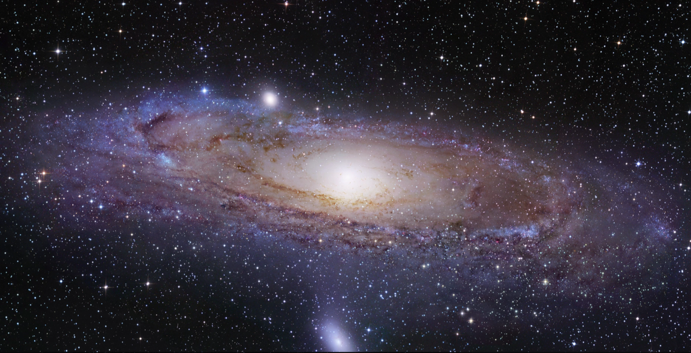
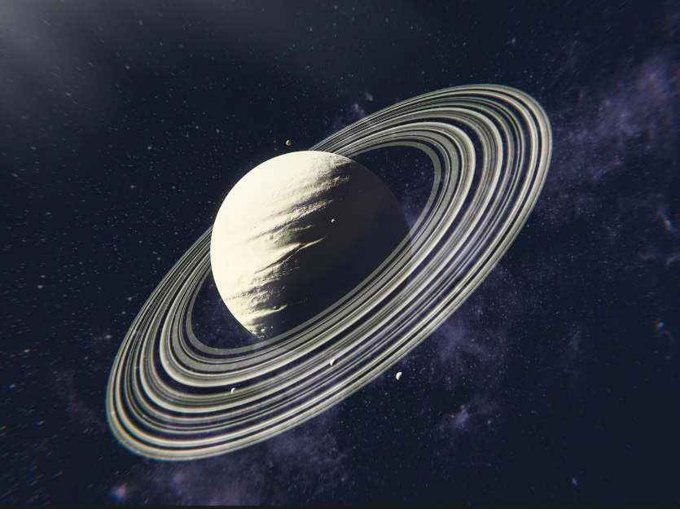
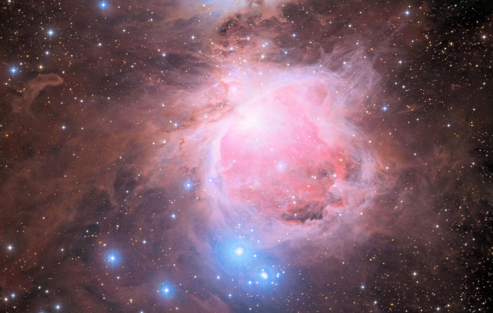
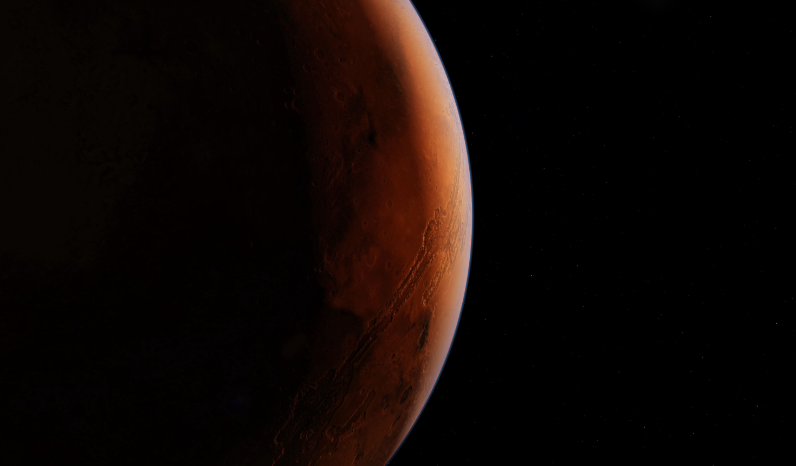
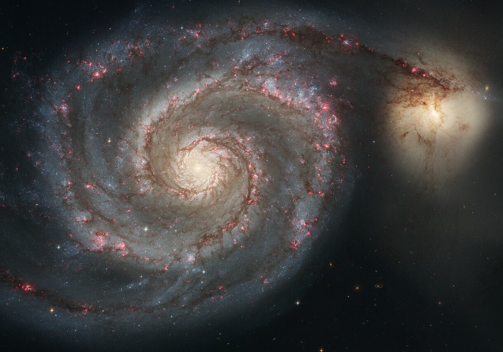
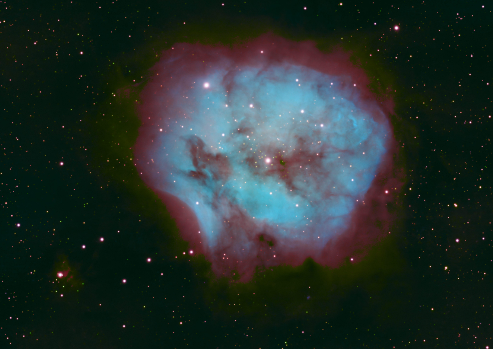

Галактика Андромеды (M31)
15 марта 2024
Ближайшая крупная галактика к Млечному Пути. Находится на расстоянии 2,5 миллиона световых лет от Земли.
Коллекция удивительных изображений космоса, планет, галактик и туманностей.

15 марта 2024
Ближайшая крупная галактика к Млечному Пути. Находится на расстоянии 2,5 миллиона световых лет от Земли.

20 марта 2024
Шестая планета от Солнца, известная своей впечатляющей системой колец, состоящих из льда и пыли.

5 апреля 2024
Яркая диффузная туманность в созвездии Ориона, видимая невооружённым глазом. Место рождения новых звёзд.

12 апреля 2024
Четвёртая планета от Солнца. Здесь находится самый высокий вулкан в Солнечной системе — Олимп (21 км).

18 апреля 2024
Знаменитая спиральная галактика, взаимодействующая с соседней галактикой-компаньоном.

25 апреля 2024
Область звездообразования в созвездии Лебедя, где новые звёзды рождаются из газа и пыли.